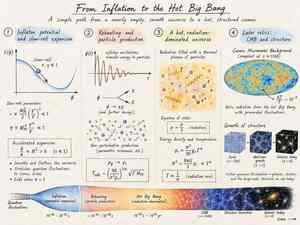
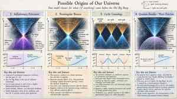
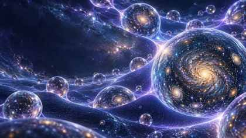

What is the Big Bang?
A hot radiation-dominated phase, not automatically an experimentally proved absolute beginning.
FIELD NOTE 001 · COSMIC ORIGINS · 2026
I treated the question as an inverse problem: start from the relics we can measure, evolve candidate histories, and ask which earlier state can actually produce our hot universe.
THE QUESTIONS I ACTUALLY TRIED TO ANSWER
A hot radiation-dominated phase, not automatically an experimentally proved absolute beginning.
Inflation + reheating supplies explicit dynamics from vacuum domination into radiation.
Primordial perturbations map the model into the CMB through ns, r and the power spectrum.
No. Eternal inflation is a model-dependent extension; other universes remain unobserved.
THE PHYSICAL PATH
The critical step is reheating. Inflation alone leaves a cold, vacuum-dominated universe. A viable origin story has to transfer energy into radiation and then connect those early fluctuations to the structure we observe billions of years later.

THE WALLS OF THE ROOM
The “wall” is causal: light has had only finite time to reach us through an expanding spacetime. Regions beyond our particle horizon can exist without being separate universes. Bubble universes are a stronger, model-dependent statement.
PUBLIC DATA
The interactive chart loads the NASA LAMBDA February 2026 TT-spectrum table used to visualize released Planck 2018 and ACT DR6 measurements.
MODEL ↔ DATA LAB
Compressed benchmark: nₛ ≈ 0.9682 ± 0.0032 and r < 0.034 for the cited current CMB synthesis.

THE ALTERNATIVES ARE NOT DELETED — THEY ARE PUT ON TRIAL


AND THE MULTIVERSE?
When quantum fluctuations overpower classical inflaton drift in some regions, inflation can become self-reproducing. Reheating then ends inflation locally while other regions continue expanding.
If 𝓡EI > 1 locally, the stochastic regime becomes possible. That is a theoretical criterion. It is not a telescope image of another universe.
AUTHOR'S SYNTHESIS · 2026
If forced to compress the entire investigation to one word:It is the strongest working bridge I find between a pre-hot-Big-Bang state and the hot, structured universe we can measure. The deeper question — what selected the inflating state, and whether its global completion contains other universes — remains open.
PRIMARY LITERATURE + DATA